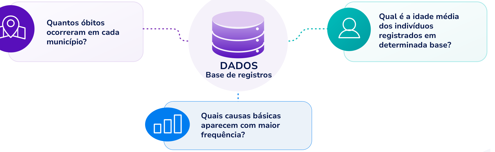

Módulo 2 | Aula 1
Introdução ao Python para Análise de Dados em Saúde
Introdução à programação com Python
No contexto da Ciência de Dados, você já parou para pensar por que aprender programação?
Antes de aplicar algoritmos, é preciso realizar algumas atividades fundamentais, como por exemplo:
- Importar arquivos.
- Organizar informações.
- Corrigir inconsistências.
- Calcular indicadores.
- Produzir tabelas e gráficos.
Essas tarefas podem ser realizadas manualmente quando trabalhamos com poucos registros. Porém, em projetos reais, é comum lidar com centenas de milhares ou milhões de observações e, realizar essa tarefa manualmente, seria praticamente impossível.
Por isso, ao escrever um programa, descrevemos uma sequência de instruções que poderá ser executada automaticamente sempre que uma nova base de dados estiver disponível. Dessa forma, tarefas repetitivas deixam de depender da intervenção humana e passam a ser executadas de maneira rápida e consistente.
Programação como ferramenta para Ciência de Dados
Neste curso, Python não é um objetivo em si mesmo: é um instrumento para responder perguntas relevantes em saúde pública. A partir da análise de dados, diferentes perguntas podem ser feitas e respondidas. Vamos ver alguns exemplos?

O foco deve estar em responder a perguntas como essas e, para isso, será necessário desenvolver a nossa capacidade de sistematizar, organizar e processar grandes volumes de informação. A programação permite executar essas tarefas de maneira automática, reduzindo o tempo de trabalho e aumentando a confiabilidade dos resultados.
Por que utilizar Python?
Existem diversas linguagens utilizadas em análise de dados (R, Julia, SAS, MATLAB), cada uma com vantagens específicas. Neste curso utilizaremos Python devido a algumas características, como por exemplo:
- Sintaxe simples e de fácil leitura.
- Grande quantidade de bibliotecas para Ciência de Dados.
- Ampla utilização em pesquisa científica e em Inteligência Artificial.
- Comunidade internacional ativa e software livre e gratuito.
Além da análise de dados, Python é utilizado no desenvolvimento de sistemas, automação de tarefas e aprendizado de máquina, o que faz com que os conhecimentos desta aula sejam aproveitados em diferentes contextos profissionais.
O ambiente de desenvolvimento utilizado no curso
Para desenvolver as atividades deste e do próximo módulo, será necessário o uso de um ambiente com o Python configurado e um Ambiente de Desenvolvimento Integrado (Integrated Development Environment - IDE).
Uma outra opção, e que pode ser mais simples para um primeiro contato, é utilizar serviços disponíveis online em que todo o processamento é feito remotamente. Os exercícios deste curso podem ser executados em plataformas como o Google Colab ou Kaggle Code, sem necessitar de nenhuma instalação ou configuração de ambiente, mas exige a criação de uma conta gratuita nas plataformas, caso ainda não possua.
Utilizaremos o Google Colab ao longo do curso, que chamaremos simplesmente de Colab, mas sinta-se à vontade para usar o ambiente que for mais conveniente para você. Todos os materiais e exemplos estarão prontos para download ou para a execução direta no Colab.
Clique aqui para acessar o material complementar contendo:
- Tutorial rápido para o Colab.
- Links para abrir os notebooks das aulas diretamente no Colab ou para download.
- Bases de dados para download.
Estudo de caso
Ao longo desta aula utilizaremos um conjunto de dados fictício inspirado no Sistema de Informações sobre Mortalidade (SIM). A Tabela a seguir apresenta um pequeno trecho da base que será utilizada.
Exemplo simplificado de registros inspirados no SIM
| ID | Município | Sexo | Idade | Causa básica | Ano |
|---|---|---|---|---|---|
| 1 | Belo Horizonte | F | 72 | I21 | 2023 |
| 2 | Uberlândia | M | 58 | C34 | 2023 |
| 3 | Juiz de Fora | F | 81 | I50 | 2023 |
| 4 | Montes Claros | M | 43 | V89 | 2023 |
| 5 | Lavras | F | 67 | E11 | 2023 |
Fonte: elaborado pelo autor, inspirado na estrutura do SIM.
Embora esses dados ainda não sejam importados para o Python, eles servirão de referência para praticamente todos os exemplos desenvolvidos ao longo do curso.
Observe a tabela apresentada. Sem usar Python responda:
Quantos registros pertencem ao sexo feminino?
Quantas pessoas possuem 60 anos ou mais?
Essas perguntas são simples de responder quando temos apenas cinco registros, mas como respondê-las quando trabalhamos com milhões de observações? É justamente esse tipo de problema que começaremos a resolver utilizando Python.
Nesta primeira parte, compreendemos por que a programação é indispensável para a análise de grandes volumes de dados. No próximo tópico, você escreverá seus primeiros programas em Python.